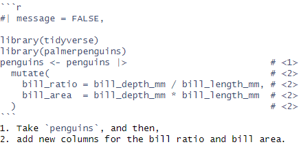

Quarto
YAML, rendering and parameters
Moving from different formats to Quarto
Migrating from RMarkdown
Quarto is quite new. It’s enough similar to RMarkdown to make most of the uses convertible. How?
From a regular R script:
Step 1) Run knitr::convert_chunk_header(input = "RMD_class_1_cut.Rmd", output = "QMD_class_1_cut.qmd")
Step 2) Edit the YAML options (in notepad, through R, etc.)
| RMD | Quarto |
|---|---|
| output: | format: |
| output: html_document | format: html |
| output: pdf_document | format: pdf |
| output: word_document | format: docx |
| output: xaringan | format: revealjs |
| output: ioslides | format: ioslides |
| : Other : |
Done!
Turning your Notebook into a Quarto document
Step 1) insert a YAML header in a raw block
For example:
---
title: "(R)Markdown" author: "Name" date: "4/20/2023" format: html
---
Done! You don’t even need to switch to *.qmd!
But if you want embedded code chunks, you should switch to .qmd.
You can convert a *.ipynb file to a *.qmd file and vice versa with: quarto convert notebook.ipynb (to qmd) quarto convert notebook.qmd (to ipynb)
Or use Jupytext to have both (synced).
To add a (refreshable) preview
From terminal run:
quarto preview file.qmd
or
quarto preview notebook.ipynb
(You can preview in pdf by adding --to pdf)
Need a recap?
Remember you can check the documentation - there’s many more options than we covered.
For example, let’s check here for some more info on figures or diagrams or other neat tricks.
So what is YAML?
YAML = YAML Ain’t Markup Language
As Wikipedia puts it: “a human-readable data-serialization language”.
a way to represent computer data in a format that is easily understood by humans, allowing for easier interpretation and modification of data without needing specialized software or tools
these languages are commonly used in web development, data exchange between different systems, and configuration files for applications.
YAML in Quarto - options
Basics
The syntax
YAML requires indentation for options and suboptions (accordingly with the hierarchy). Examples:
---
title: "My document" format: html
---
Now with html-specific options:
---
title: "My document"
format:
html:
toc: true
toc-depth: 2
number-sections: true
---
Dates
Change the date format and make it dynamic:
date: today
date-format: short
Setting default chunk options
Within the execute key you can set default options for code blocks. They can be overridden within the specific code chunks.
Example:
---
execute: echo: fenced warning: false cache: true freeze: true
---
freeze specifies a more general approach for caching when rendering a bunch of files or a whole project. true to not recompute generated computational output during a whole project render. false to always recompute (default). auto to recompute when a source file changed.
Switching formats
Let’s try pdf and docx.
HTML options
The html format is the most flexible as it enables dynamic and interactive elements.
To get an html final output, code in .qmd gets evaluated and the output is saved to .md (regular markdown). This is then translated using pandoc to html.
Table of Contents
---
title: "My document"
format:
html:
toc: true
toc-depth: 2
toc-expand: 3
toc-title: Contents
toc-location: body
---
toc-depth describes the levels included (default 3).
toc-expand how many should be expanded from the start (true if all, default false for none).
toc-title to add a caption.
toc-location to move the ToC (left, right or body)
smooth-scroll: true to enable smooth scrolling.
Section numbering
number-sections: true
number-depth: 3 Number of levels for numbering.
Global code-chunk options
code-fold to make it optional whether to display code. true to start with collapsed, false to not include, show to start with shown but collapsable.
code-summary specify text for collapsed code.
You can also introduce code annotations:
#| message = FALSE,
library(tidyverse)
library(palmerpenguins)
1penguins <- penguins |>
2 mutate(
bill_ratio = bill_depth_mm / bill_length_mm,
bill_area = bill_depth_mm * bill_length_mm
)- 1
-
Take
penguins, and then, - 2
- add new columns for the bill ratio and bill area.
This is how you define it:

Default is set as code-annotations: below. You can alternatively try hover and select. This option goes to a standalone line in YAML.
(Also: to suppress this choose none or false to just print out the numbered list as is)
Including html elements
E.g.:
include-in-header:
- text: |
(e.g. some script in an html node)
- file: analytics.html
- comments.html
include-before-body: header.html
Styling
You can use css for styling:
format:
html:
css: styles.css
Themes
You can do a quick swap of the whole theme by using one of 25 themes from Bootswatch. Try:
theme: lumen
theme: solar
theme: superhero
You can also provide a dark and light option:
theme: light: flatly dark: darkly
Some others (not all)
Disable the default special features with:
minimal: true
Divs and Spans
You can use classes and define ‘div’ regions (as in html nodes), by indicating the start and end of a region with :::.
For example:
Putting your stuff in tabs
::: {.panel-tabset}
## Header 1
Text with headers
## Header 2
Some more text
:::
For example:
Lists
1. Item 1
2. Item 2
2. Item 3 # Note the error in numbering
Item 1
Item 2
Item 3
# It's fine here though
* Item
* Another item
Item
Another item
1. Item 1
- Item 2
- Item 3
- Item 1
- Item 2
- Item 3
Creating a self-contained Html
---
format:
html:
embed-resources: true
---
PDF options
Many of the options for the pdf and docx formats look the same. Main differences:
no dynamic elements (e.g. no floating table of content)
no direct html support
TeX support (e.g. you can use document classes, etc.)
Troubleshooting
Getting from markdown to pdf requires a TeX installation. Quarto will propose installing tinytex via its tools. You can try that.
If it’s not working, troubleshooting usually goes through some reinstallation.
You can also try adding:
latex-tinytex: false
this will force Quarto to use what you have installed in the system instead of the Quarto installation.
Including elements
Instead of html files and code, you may attach .tex files and TeX writing:
---
format:
pdf:
include-in-header:
- text: |
\usepackage{eplain}
\usepackage{easy-todo}
- file: packages.tex
- macros.tex
---
Lists of tables and figures
lof: true
lot: true
Combining formats
You can also render several formats and link them together.
For example:
---
format: html: default docx: default
---
Or if the file extensions overlap:
---
format:
html: default
revealjs:
output-file: document-revealjs.html
---
Getting an .md file
We might be interested in getting a pure .md file (for example for a readme.md file for GitHub).
.md is a byproduct of the rendering process, usually deleted by the end of the process.
To keep it:
keep-md: true
Try it for the QMD_class_1_cut.qmd file and compare QMD with MD.
Exporting YAML
We’ve been editing YAML before. We can actually put the info from YAML in a separate file that will be automatically considered for all qmd documents.
It’s helpful when:
- there’s several documents that we want to have similar settings.
- we work with a team and want everyone to use the same settings.
We have several options here:
_quarto.yml file keeps information at a project level (see here)
dir/_metadata.yml file keeps information at a directory level (e.g. within a project)
dir/document.qmd is just what we put in the document header.
Document overrides _metadata.yml which overrides _quarto.yml.
You can create the .yml files in notepad.
Mostly the options are merged rather than overwritten (so bundled together).
Rendering
You can render Quarto MD files from your scripts or terminal. To do so, use:
Terminal
For a whole project:
quarto render in current folder or quarto render myproject for the myproject project.
For a file:
quarto render document.qmd
For a folder:
quarto render directory/
From the level of R
library(quarto)
quarto_render()
You can specify options for the rendering, including:
output_format, output_file, use_freezer, execute_params, etc.
Parameters will let you specify data inputs at the document’s conception.
Assignment
Get your TV show description file from the previous week. (If you don’t have one, see the note below). Modify it using what we’ve learned today:
Render it into at least two different formats in an automated way (e.g. using YAML options or a script).
Add some features for the .html output, e.g.: add a table of contents and change the theme.
Include tabs and some code display options.
Browse through the documentation and pick additional configuration options on your own.
Note: if you didn’t finish the assignment last week, you can work with the Assignment.Rmd file. You’ll have to convert it to .qmd first though (use what we’ve learned today for that!). There are also some new data files with information on GoT episodes.